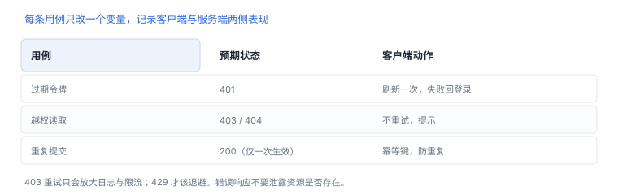

网络与授权验证
用一个自己写的服务，验证“客户端说了不算”
这个练习的重点不是拦截流量，而是验证服务端是否真的独立做判断。自建测试服务的最大价值，是你可以按需制造“未授权”“过期”“越权”三种状态。
1. 建立测试服务
最小接口设计：
| 接口 | 行为 | 用于验证 |
|---|---|---|
| 登录 | 签发短期令牌与刷新凭据 | 会话生命周期 |
| 读取记录 | 按记录 ID 返回，校验归属 | 对象级授权 |
| 更新记录 | 校验归属与字段范围 | 输入校验、幂等 |
| 管理接口 | 仅管理角色可调用 | 功能级授权 |
服务端要有结构化日志（不含令牌原文），并记录“主体、动作、资源、结果”，方便复盘。
2. 测试矩阵
| 用例 | 构造方式 | 预期 |
|---|---|---|
| 无令牌 | 去掉认证头 | 401，不含业务数据 |
| 过期令牌 | 服务端缩短有效期 | 401，客户端能刷新或回到登录 |
| 越权读取 | A 的令牌请求 B 的记录 ID | 403 或 404，不泄露存在性 |
| 越权更新 | A 更新 B 的记录 | 拒绝，数据未改变 |
| 字段越界 | 提交超长字符串/非法枚举 | 400，服务端拒绝 |
| 重复提交 | 同一幂等键提交两次 | 只生效一次 |
| 限流 | 短时间大量请求 | 429，客户端退避 |

3. 执行要点
- 每个用例只改一个变量，记录请求、响应与客户端表现。
- 确认客户端在 403 时不重试、在 401 时只刷新一次。
- 检查错误响应是否泄露内部结构（堆栈、SQL、内部路径）。
- 所有测试账号与数据为虚构，测试结束清理。
4. 交付物：用例结果表
- 用例结果表：用例、预期、实际、证据、结论。
- 发现清单：按影响排序，标注“客户端可缓解”与“必须服务端修复”。
- 修复建议：优先服务端授权与输入校验，其次客户端体验优化。
5. 响应码处理
| 状态 | 含义 | 客户端动作 |
|---|---|---|
| 401 | 身份失效 | 刷新一次，失败回登录 |
| 403 | 权限不足 | 不重试，提示 |
| 429 | 限流 | 退避后重试 |
用 curl 复现三类响应（自有测试服务）
curl -i http://127.0.0.1:8080/records/1
curl -i -H "Authorization: Bearer expired" http://127.0.0.1:8080/records/1
curl -i -H "Authorization: Bearer $TOKEN" http://127.0.0.1:8080/records/2403 不重试
权限不足时重试只会放大日志与限流；401 才值得刷新一次，且要防止刷新风暴。
权限不足时重试只会放大日志与限流；401 才值得刷新一次，且要防止刷新风暴。
6. 常见错误：网络用例
| 错误 | 后果 |
|---|---|
| 对 403 做重试 | 放大日志与限流，问题更明显 |
| 只测成功路径 | 失败分支的错误处理无人验证 |
| 用同一账号测越权 | 无法区分“有权”与“校验缺失” |
| 忽略 401 刷新循环 | 令牌失效时形成刷新风暴 |
7. 自测
- 为什么越权读取应返回 404 或统一错误，而不是详细说明？
- 客户端在 403 时重试会造成什么后果？
- 幂等键与限流分别解决哪类问题？